ДД.ММ.ГГГГ
Программа «1С:Управление нашей фирмой» (1С:УНФ) позволяет вести учет, выписывать первичные документы, формировать управленческую отчетность.
Поддерживает подготовку и сдачу регламентированной отчетности индивидуального предпринимателя на УСН, ЕНВД и патенте.
Важно! Основным рекомендуемым вариантом ведения учета и настройки синхронизации является
создание первичных документов, ведение учета, формирование управленческих отчетов в 1С:УНФ.
Для формирования и сдачи регламентированной бухгалтерской отчетности рекомендуем выгружать введенную информацию
из 1С:УНФ в 1С:БП.
Такой вариант ведения учета и синхронизации информации предполагает единую точку ввода и позволит избежать дублирования и ошибок.
Перед началом настройки синхронизации в новой базе, где ранее не вели учет, заполните следующую информацию.
Если стартуете базу 1С:БП:
Если стартуете базу 1С:УНФ:
Рекомендуется начинать настройку синхронизации в базе 1С:УНФ (рис.1).
Только если используете 1С:УНФ в сервисе 1cfresh.com, а 1С:БП установлена как локальная база, то начинайте настройку из базы 1С:БП.
Важно! Перед первой настройкой синхронизации сделайте резервные копии обеих информационных баз.
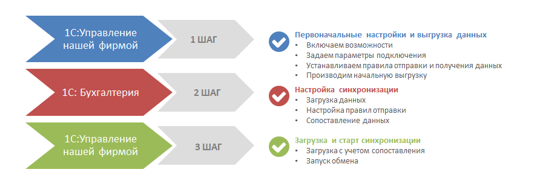
Рис.1 Схема настройки синхронизации
Для включения возможности синхронизации установите флажок Синхронизация данных в разделе
Компания – Настройки – Интеграция с другими программами
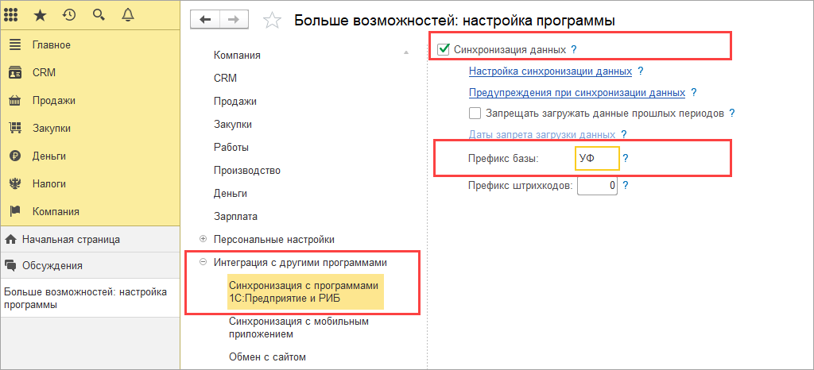
Установите префикс информационной базы в поле Префикс базы. Префикс - уникальный набор цифр и букв, который будет добавляться к номеру загружаемого объекта для определения базы создания.
Устанавливайте дату запрета, чтобы загружать документы только за определенный период. Например, установите дату после сдачи регламентированной отчетности и начале нового квартала или года.
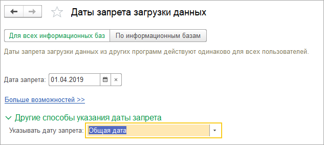
Для начала создайте новую настройку: Настройки синхронизации данных – Новая синхронизация данных.
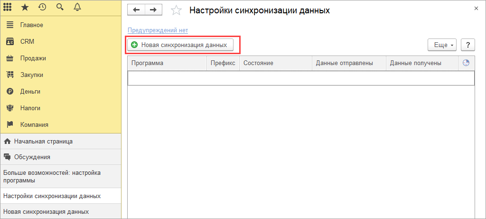
Выберите редакцию 1С:Бухгалтерия 8.
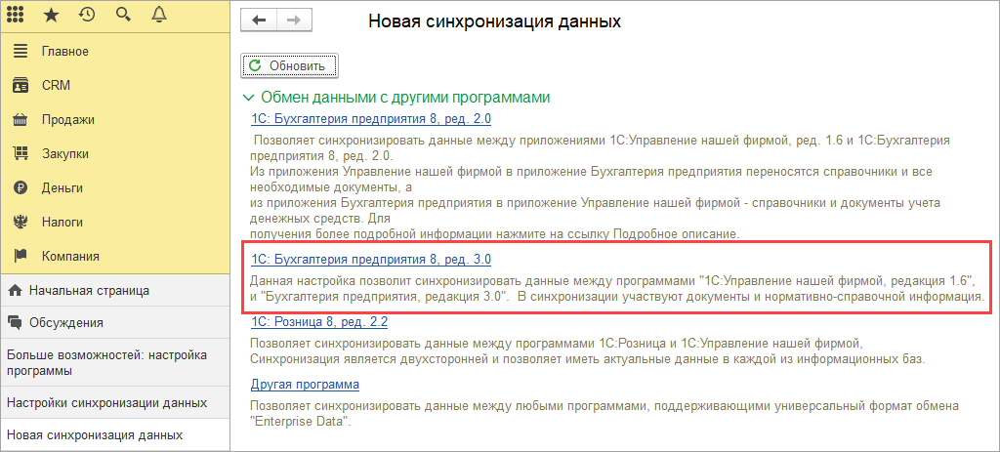
Переходите к следующему этапу Настроить параметры подключения.
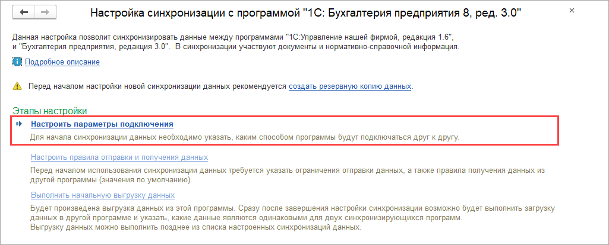
Выбирайте вариант подключения.
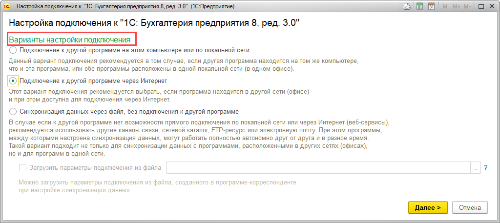
Если подключаетесь к базе на том же компьютере или в локальной сети, то укажите расположение базы, введите логин и пароль пользователя с правами администратора.
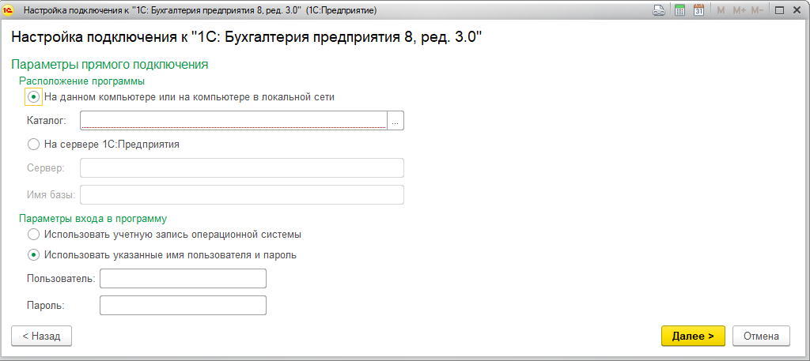
Если подключаетесь к базе, расположенной в сервисе 1cfresh.com, или информационной базе, опубликованной в интернете, укажите ссылку на размещение базы,
логин и пароль пользователя с правами администратора.
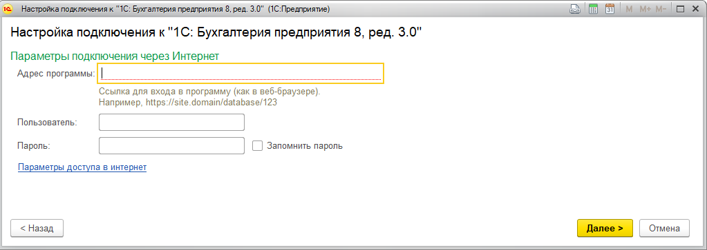
При использовании сетевого каталога в качестве канала передачи данных укажите его расположение.
Для ограничения доступа к файлу выгрузки или оптимизации его передачи создайте архив файла и установите к нему пароль.
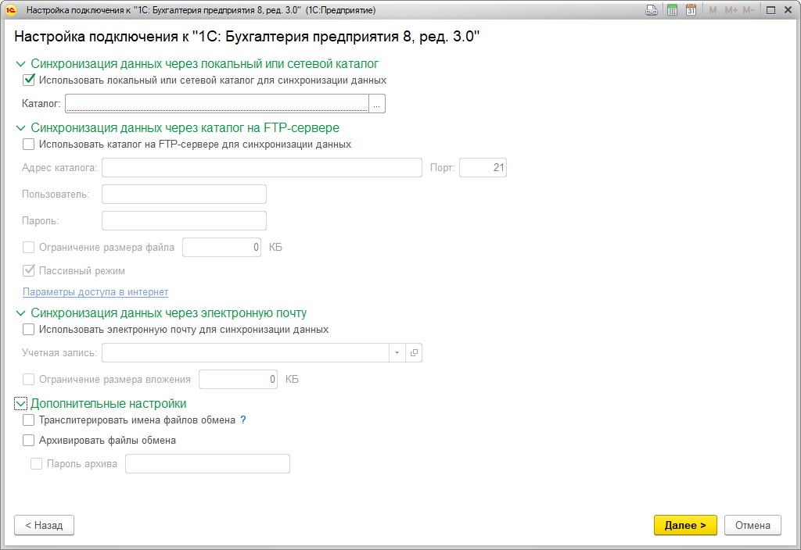
Если параметры подключения верные, то настройке синхронизации присваивается наименование.
Укажите префикс информационной базы, с которой будет выполняться синхронизация
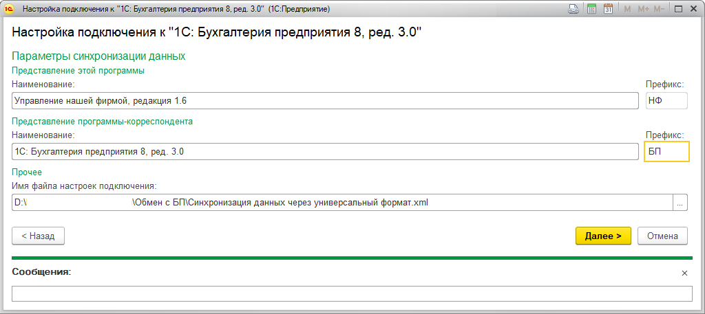
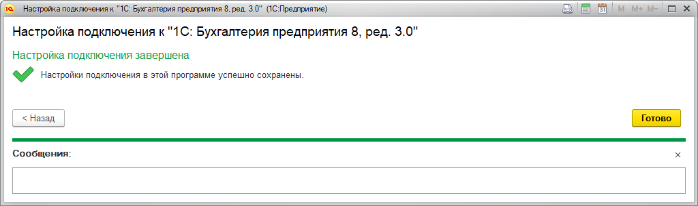
Переходите к следующему этапу Настроить правила отправки и получения данных.
Важно! Если настраивайте синхронизацию данных через файл, то перед этим шагом перейдите к ШАГ 2.
Настройка синхронизации в 1С:БП.
После окончания настроек в 1С:БП вернитесь к этому шагу и завершите настройки в
1С:УНФ.
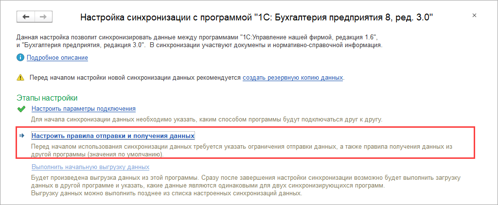
На этом этапе устанавливайте объем информации для синхронизации, с какой даты и по каким правилам будет выгружаться информация из 1С:УНФ.
Полная таблица соответствия и возможностей синхронизации документов и справочников между программами приведена в конце статьи.
Устанавливайте параметры синхронизации:
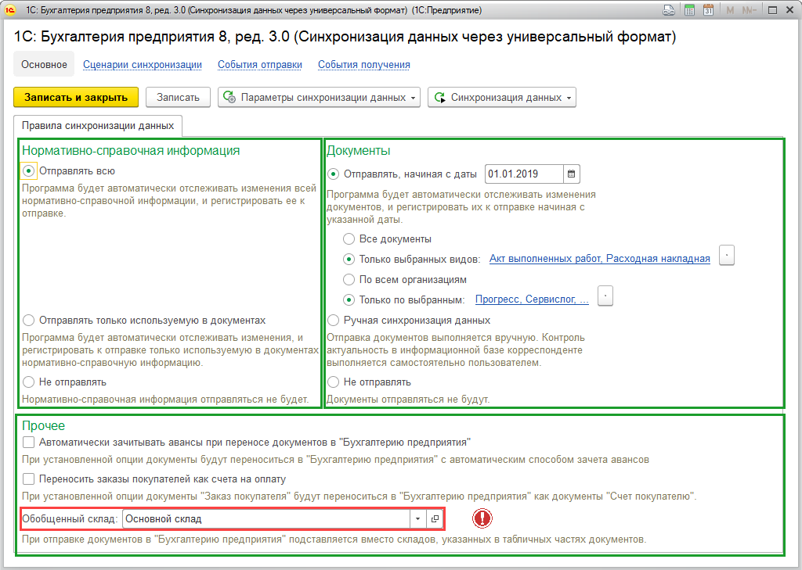
Начните с настройки параметров в разделе Нормативно-справочная информация. Выбирайте Отправлять всю или ограничьте Отправлять только используемую в документах.
Продолжите настройки в разделе Документы. Выбирайте синхронизацию всех документов. Или ограничивайте датой начала выгрузки документов, видами документов или организациями.
Если настроили отбор видов документов для выгрузки, то выгружаются и все связанные документы. Например, вместе с документами Поступление на счет выгрузятся связанные с ними Акт выполненных работ, Расходная накладная.
Выберите вид синхронизации. По умолчанию устанавливается автоматическая. Для ручной синхронизации установите флажок Ручная синхронизация данных.
В разделе Прочее настраивайте возможности:
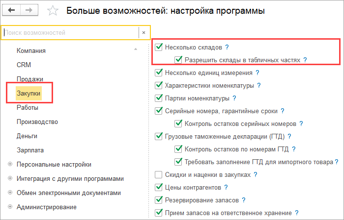
Важно! Укажите обобщенный склад, если ведете в 1С:УНФ учет по нескольким складам в табличной части документов. В 1С:БП эта информация будет перенесена на выбранный Обобщенный склад.
В дальнейшем настроенные параметры можно изменить.
Переходите к завершающему этапу первоначальной настройки синхронизации Выполнить начальную выгрузку данных.
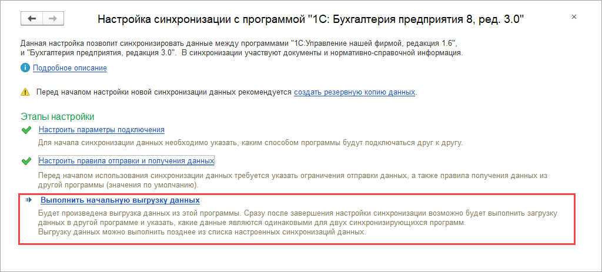
После этого этапа переходите к настройке в 1С:БП.
Переходим к настройке синхронизации в 1С:БП.
Администрирование - Синхронизация данных – Настройки синхронизации данных
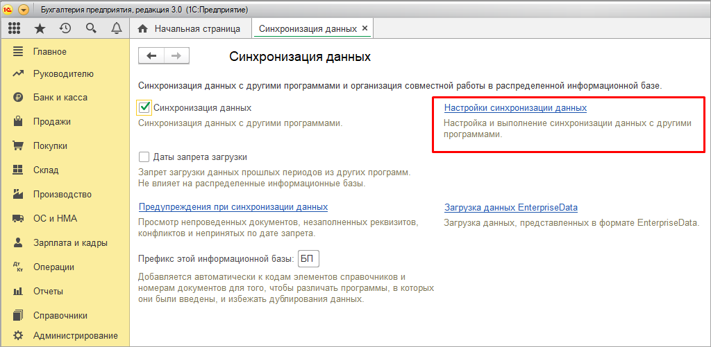
В зависимости от расположения информационных баз и способа синхронизации выбирайте настройки: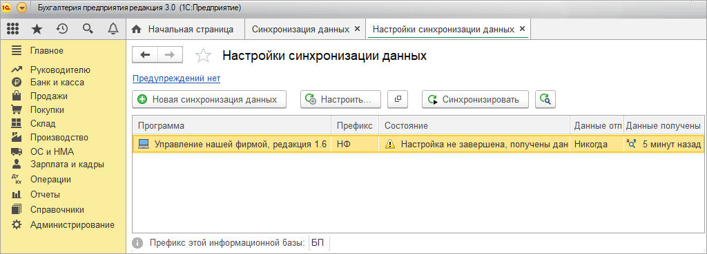
В 1С:БП аналогично 1С:УНФ устанавливаем правила для получении и отправки информации.
Правила отправки информации.
Важно! Основной рекомендуемый вариант синхронизации - получение всей информации в 1С:БП для формирования регламентированной бухгалтерской отчетности.
Без обратной выгрузки скорректированной информации в 1С:УНФ.
Такой сценарий позволяет избежать дублирования информации и возникновения ошибок.
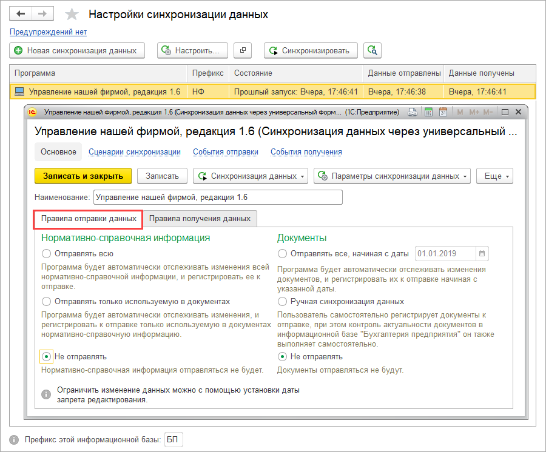
На вкладке Правила получения данных заполняйте правила, применяемые по умолчанию при загрузке информации.
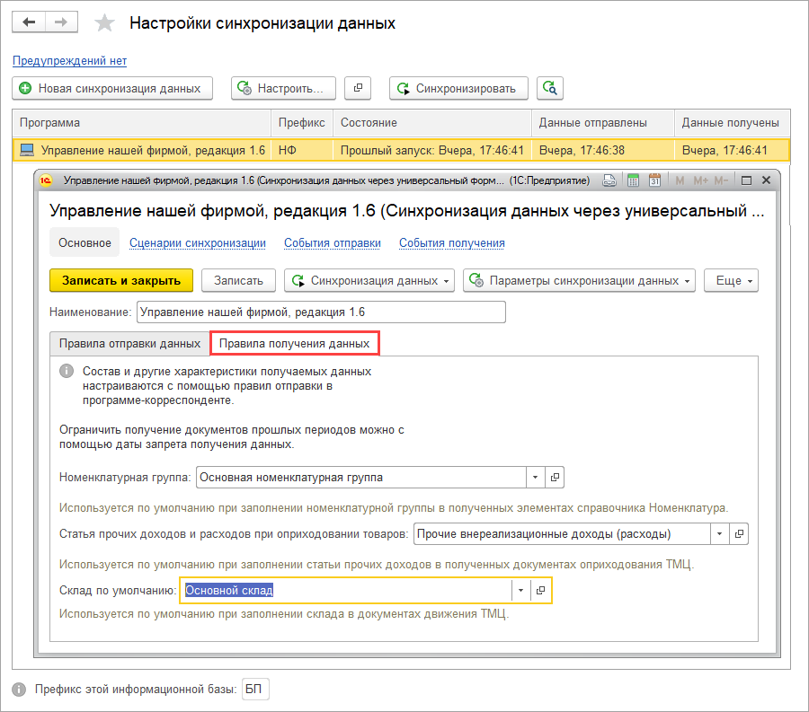
На этом этапе сопоставляйте данные в двух программах, чтобы избежать дублирования элементов.
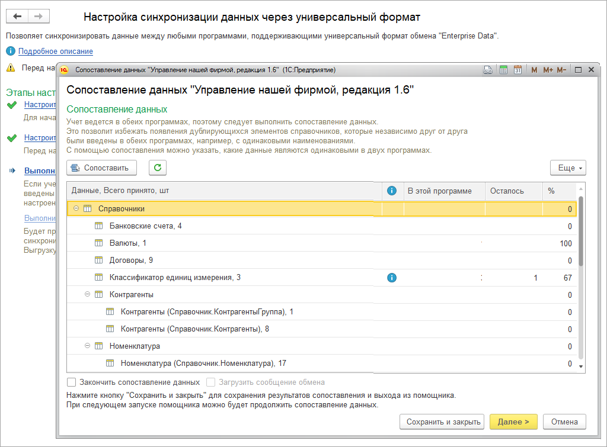
После этого этапа переходите в 1С:УНФ для завершения настроек и запуска синхронизации.Для загрузки полученных данных из 1С:БП выполните сопоставление и загрузку полученных данных в 1С:УНФ.
В окне настроек синхронизации данных в 1С:УНФ выберите Синхронизировать.
Начинается сопоставление данных. По завершении получите сообщение о завершении синхронизации.
При выявлении ошибок получите предупреждение, где можно просмотреть и исправить ошибки.
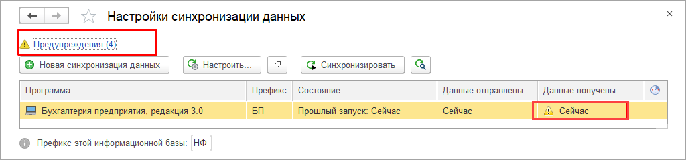
Запускайте синхронизацию, нажав на кнопку Синхронизировать в одной из баз программ.
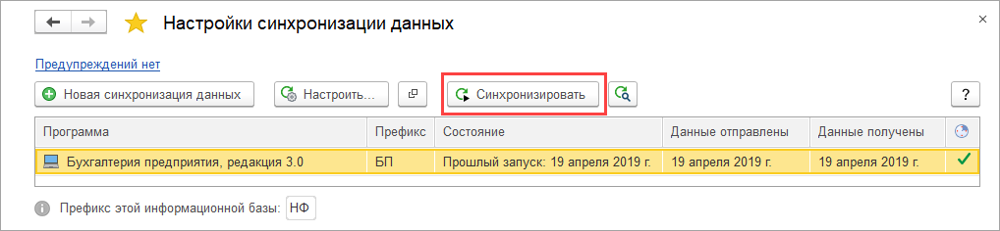
В первый раз справочники синхронизируются по коду или наименованию. Элементы справочников могут синхронизироваться по определенным полям, например по ИНН и КПП в справочниках Организации и Контрагенты.
В дальнейшем синхронизация справочников и документов производится по внутреннему идентификатору.
Документы, участвующие в синхронизации, и их соответствия в 1С:УНФ и 1С:БП
Важно! В таблице соответствия показаны возможности (+) выгрузки документов как из 1С:УНФ в 1С:БП, так и обратно.
Обращаем внимание, что основной рекомендуемый вариант синхронизации предусматривает создание документов и ведение учета в 1С:УНФ.
В 1С:БП загружается вся информация из 1С:УНФ для формирования регламентированной бухгалтерской отчетности. Без обратной выгрузки скорректированной информации из 1С:БП в 1С:УНФ.
|
1С:Управление нашей фирмой |
1С:Бухгалтерия 8 |
1С:УНФ →1С:БП |
1С:БП →1С:УНФ |
Дополнительная информация |
|
ДЕНЬГИ |
||||
| Поступление в кассу | Поступление наличных (ПКО) | + | + | |
| Расход из кассы | Выдача наличных (РКО) | + | + | |
| Поступления на счет | Поступление на расчетный счет | + | + | |
| Расход со счета | Списание с расчетного счета | + | + | |
| Платежное поручение | Платежное поручение | + | - | |
| Операция по платежным картам | Операция по платежным картам | + | - | |
| Авансовый отчет | Авансовый отчет | + | - | Если не включена возможность учета складов в табличной части документов, то заполняется складом из
первой строки вкладки Запасы документа.
Если возможность включена, то заполняется складом, выбранным как Обобщенный склад в настройках Правил синхронизации в 1С:УНФ. |
| Выемка денег | Поступление наличных (ПКО) | + | - | |
| Начисления кредитов и займов | Фактические движения денежных средств | + | - | |
|
ПРОДАЖИ |
||||
| Заказ покупателя | Счет покупателю | + | - | Счет покупателю в 1С:БП может формироваться из 1С:УНФ в зависимости от установленного флажка
Переносить заказы покупателей как счета на оплату в правилах синхронизации:
|
| Счет на оплату | Счет покупателю | + | - | |
| Расходная накладная | Реализация (акт, накладная). Реализация товаров: накладная | + | - | Если в 1С:УНФ в табличной части Расходной накладной только товары |
| Реализация (акт, накладная). Реализация: товары, услуги, комиссия | + | - | Если в 1С:УНФ в табличной части Расходной накладной товары и услуги либо товары на комиссию | |
| Акт выполненных работ | Реализация (акт, накладная). Реализация услуг: акт | + | - | |
| Приходная накладная | Возврат товаров от покупателя | + | - | |
| Счет-фактура (операция - продажа) | Счета-фактуры выданные (на реализацию) | + | - | |
| Корректировка реализации | Корректировка реализаций | + | - | |
| Счет-фактура (на основании корректировки реализаций - операция корректировка) | Счет-фактура выданная (корректировочные) | + | - | |
| Отчет о розничных продажах | Отчет о розничных продажах | + | - | Чек ККМ и Чек ККМ на возврат не переносятся. Переносится только Отчет о розничных продажах |
| Отчет комиссионера | Отчет комиссионера (агента) о продажах | + | - | |
| Переоценка в рознице (суммовой учет) | Переоценка товаров в рознице | + | - | |
| Корректировка долга покупателя | Корректировка долга | + | - | |
|
РАБОТЫ |
||||
| Заказ-наряд | Реализация (акт, накладная). Реализация товаров: накладная | + | - | Если в 1С:УНФ в документе Заказ-наряд только товары. Переносится только Заказ-наряд с состоянием Завершен |
| Реализация (акт, накладная). Реализация услуг: акт | + | - | Если в 1С:УНФ в документе Заказ-наряд только работы. Переносится только Заказ-наряд с состоянием Завершен | |
| Реализация (акты, накладные). Реализация: товары, услуги, комиссия | + | - | Если в 1С:УНФ в документе Заказ-наряд товары и работы. Переносится только Заказ-наряд с состоянием Завершен | |
| Прием и передача в ремонт | Реализация (акты, накладные) | + | - | Синхронизация происходит, если ремонт осуществляется своими силами и на его основе был создан документ Заказ-наряд с состоянием Завершен либо Акт выполненных работ и/или Расходная накладная |
| ЗАКУПКИ | ||||
| Счет на оплату (полученный) | Счет от поставщика | + | - | |
| Приходная накладная | Поступление (акты, накладные). Поступление товаров: накладная | + | - | Если в 1С:УНФ в табличной части Приходной накладной только товары |
| Поступление (акт, накладная). Поступление услуг: Акт | + | - | Если в 1С:УНФ в табличной части Приходной накладной только услуги | |
| Поступление (акт, накладная). Поступление: товары, усуги, комиссия | + | - | Если в 1С:УНФ в табличной части Приходной накладной товары и услуги | |
| Счет-фактура (полученный) | Счет-фактура полученный (на поступление) | + | - | |
| Расходная накладная | Возврат товаров поставщику | + | - | |
| Корректировка поступлений | Корректировки поступлений | + | - | |
| Счет-фактура (полученный) (на основании корректировки поступлений - операция корректировка) | Счет-фактура полученный (корректировочный) | + | - | |
| Дополнительные расходы | Поступление дополнительных расходов | + | - | |
| Инвентаризация запасов | Инвентаризация товаров | + | - | |
| Оприходование запасов | Оприходование товаров | + | - | |
| Перемещение запасов | Перемещение товаров | + | - | Реквизит Партия материалов в эксплуатации в документе Перемещение запасов с видом операции Возврат из эксплуатации подбирается автоматически по методу FIFO. При переносе документа Перемещение запасов, в случае использования давальческих материалов, используйте в табличной части материалы только одного заказчика |
| Списание запасов | Списание товаров | + | - | Реквизит Партия материалов в эксплуатации в документе Списание запасов с установленным флажком Списать запасы из эксплуатации подбирается автоматически по методу FIFO |
| Пересортица запасов | Списание товаров + оприходование товаров | + | - | |
| Отчет комитенту | Отчет комитенту | + | - | |
| Корректировка долга поставщику | Корректировка долга | + | - | |
| ПРОИЗВОДСТВО | ||||
| Производство | Отчет производства за смену | + | - | Если у реквизита Изготовитель установлен тип Подразделение |
| Производство | Комплектация номенклатуры | + | - | Если у реквизита Изготовитель установлен тип Склад |
| Распределение затрат | Требование-накладная | + | - | |
| Отчет о переработке | Реализация услуг по переработке | + | - | |
| Отчет переработчика | Поступление из переработки | + | - | |
Таблица 2
Таблица соответствия справочников для синхронизации
|
1С:Управление нашей фирмой |
1С:Бухгалтерия 8 |
1С:УНФ →1С:БП |
1С:БП →1С:УНФ |
Идентификатор для синхронизации, дополнительная информация |
|
КОМПАНИЯ |
||||
| Организации | Организации | + | + | Наименование, ИНН |
| Банковские счета | Банковские счета | + | + | Владелец счета, номер счета. |
| Организационо-структурные единицы компании (склады) | Склады | + | - | Наименование, тип структурной единицы. Переносятся только элементы, используемые в документах. При использовании в 1С:УНФ режима учета по нескольким складам в табличных частях документов, документы переносятся в 1С:БП на обобщенный склад. Обобщенный склад устанавливается в Правилах синхронизации в 1С:УНФ. |
| Организационно-структурные единицы компании (подразделения) | Подразделения | + | - | Организация, наименование, тип структурной единицы. Переносятся только элементы, используемые в документах. |
| Банки | Банки | + | + | БИК |
| Страны мира | Страны мира | + | + | Код |
| Валюты | Валюты | + | + | Код |
| Статьи движения денежных средств | Статьи движения денежных средств | + | + | Наименование |
| ФИЗИЧЕСКИЕ ЛИЦА | ||||
| Физические лица | Физические лица | + | + | Наименование, дата рождения. Для синхронизации подотчетных лиц в 1С:УНФ для сотрудника должен быть заполнен реквизит Физическое лицо. Справочник Сотрудники не участвует в синхронизации |
| Виды документов физических лиц | Виды документов физических лиц | + | + | Наименование |
| Виды контактной информации | Виды контактной информации | + | + | Наименование |
| КОНТРАГЕНТЫ | ||||
| Контрагенты (покупатели/поставщики) | Контрагенты (покупатели/поставщики) | + | + | Наименование, ИНН, КПП |
| Договоры контрагентов | Договоры контрагентов | + | + | Наименование, код, владелец, валюта расчетов, организация, вид договора. |
| ЕГАИС | ||||
| Виды алкогольной продукции | Сведения об алкогольной продукции | + | - | В справочнике Номенклатура по реквизиту Код для Вида алкогольной (спиртосодержащей) продукции |
| НОМЕНКЛАТУРА | ||||
| Номенклатура | Номенклатура | + | + | Наименование. Для наборов и комплектов в 1С:БП переносятся составляющие |
| Категория номенклатуры | Номенклатурная группа | + | + | Наименование |
| Группа номенклатуры | Группа номенклатуры | + | + | Наименование |
| Спецификация номенклатуры | Спецификация номенклатуры | + | + | Наименование, владелец |
| Вид номенклатуры: запас | Вид номенклатуры: товар | + | + | Наименование |
| Вид номенклатуры: подарочный | Вид номенклатуры: товар | + | + | Наименование |
| Вид номенклатуры: услуга | Вид номенклатуры: услуга | + | + | Наименование |
| Вид цен (тип цены номенклатуры) | Тип цены номенклатуры | + | - | Наименование, валюта цены. |
| Классификатор единиц измерения | Классификатор единиц измерения | + | + | Код |
| Номер ГТД | Номер ГТД | + | + | Код. Переносятся только элементы справочника, используемые в документах |